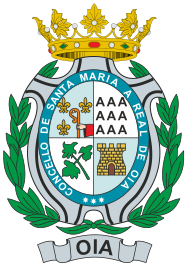

Oia
Oia es un municipio ubicado en el litoral meridional de la provincia de Pontevedra. Forma parte de la comarca del Bajo Miño. Tiene una población de 3.018 habitantes (según los datos del INE) del año 2018.

Sitios de ocio
-Puerto
-Campo del guardes
-Monte Tecla
Geografía
Lo rectilíneo de la costa se debe a la existencia de una falla que corta nítidamente todos los relieves perpendiculares a la costa formando lo que en geología se denomina como facetas triangulares (puede verse una de ellas justo detrás del campanario de la iglesia en la imagen) que corresponden a un espejo de falla normal, en la que el lado deprimido se encuentra al pie del mismo, del lado de la costa.
Historia
De la Edad del Bronce se han encontrado relieves y pinturas rupestres en los montes orientados hacia la costa. Hay abundantes restos de castros levantados por los celtas, principalmente, el yacimiento arqueológico de Bouza Fariña, en Mougás, en el cual se encontró un altar de sacrificios que ahora se encuentra en el Museo Arqueológico de Pontevedra. Y en Viladesuso hubo una villa romana con una ara que actualmente se encuentra en el Museo Diocesano de Tuy.